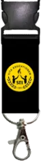
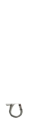

AuraPulse — Interactive Smart Health Ring
A high-fidelity interactive product showcase and 3D defense presentation for an ergonomic smart ring featuring PPG optical sensors, real-time biometrics, and dynamic Morph transitions.
2nd Year BSIT Student at STI West Negros University. Passionate about blending motion graphics, intuitive Figma UI/UX design, and clean frontend web development.



Bridging creative storytelling, intuitive UI design, and computer science fundamentals.
I'm Jhon Paulo V. Gascon, currently in my 2nd Year of BS Information Technology at STI West Negros University in Bacolod City.
My creative journey started with a fascination for motion graphics and video editing — choreographing keyframe transitions, typography, and visual pacing. That design sensibility naturally carried over into UI/UX Design in Figma and frontend web development.
To me, code is the canvas that brings ideas to life, and design is the empathy that makes technology accessible to everyone.
Designing intuitive, user-centered interfaces in Figma with interactive prototypes.
Building responsive, accessible websites with HTML, CSS, and JavaScript.
Data structures, algorithms, and platform technologies that power real software.
Leveraging AI tools and scripting to automate workflows and boost productivity.
A great digital interface should not just work; it should feel effortless, dynamic, and memorable through purposeful motion and clean aesthetics.
Active coursework includes Data Structures & Algorithms, Human-Computer Interaction, and Platform Technologies.
Plays automatically as you scroll into view. Tap left or right on any video to seek backward/forward.
Simple mograph Google edit, crafted with smooth keyframe curves, kinetic typography choreography, and clean brand transitions.
A dynamic personal showcase crafted with rhythmic editing, layered visuals, and creative kinetic transitions highlighting my editing journey.
High-octane campus motion graphics edit designed to ignite spirit and excitement across STI West Negros University events.
"I was once lost in this city too, but for some reason, i found my way back w/o even realizing it. (i'm not talking about the place :>)" — Atmospheric visual narrative.
A balanced fusion of design tools, programming languages, and web technologies.
Kinetic animation & visual storytelling
Human-centered design & layouts
Modern responsive markup & styling
Object-oriented logic & data structures
Real-world academic applications, interactive prototypes, and web software.
A high-fidelity interactive product showcase and 3D defense presentation for an ergonomic smart ring featuring PPG optical sensors, real-time biometrics, and dynamic Morph transitions.
A clean, responsive culinary guide highlighting classic Filipino delicacies like Adobo with ingredient checklists, structured preparation steps, and mobile-friendly navigation.
Personal portfolio platform engineered with modern semantic HTML5, Bento Grid layouts, custom hover-to-play video showcase, dark/light theme switching, and responsive design.
A suite of academic Java programs implementing object-oriented programming, array manipulation, search/sort routines, and algorithmic problem-solving for BSIT coursework.
The progression of my skills from college entry to active BSIT 2nd year milestones.
Mastered computer science fundamentals, algorithmic logic, computer hardware principles, and basic web structures. Discovered passion for motion design and video editing.
Enrolled in 23 units. Developing deep competencies in Data Structures & Algorithms (Java), Human-Computer Interaction, Platform Technologies, and building interactive web experiences.
Expanding into modern frameworks (React, Node.js), cloud deployment architecture, comprehensive mobile app development, and high-impact BSIT capstone engineering.
Key credentials and institutional coursework
STI West Negros University • BSIT 2G
23 Academic Units OngoingFigma Community & Student Verification
Interactive Component PrototypingIndependent Web Engineering & Practice
HTML5, CSS3, ES6+ JavaScriptWhat drives my creativity outside the classroom
Experimenting with keyframes, speed ramps, and rhythmic video editing.
Designing mobile app interfaces, dark mode dashboards, and sleek wireframes.
Leveraging autonomous AI pair-programming to build faster and smarter.
Drawing inspiration from epic story arcs and charismatic characters (Gojo!).
Have a motion design project, web inquiry, or academic collaboration in mind? Reach out!
Reach out through any channel below — I'm always open to discussing new ideas, web development, or creative video projects.
Bacolod City, Negros Occidental, Philippines
Get a comprehensive view of my technical skills, coursework, and project background.
Tap your requirements below to build a tailored collaboration brief. It automatically crafts a ready-to-send draft for you!